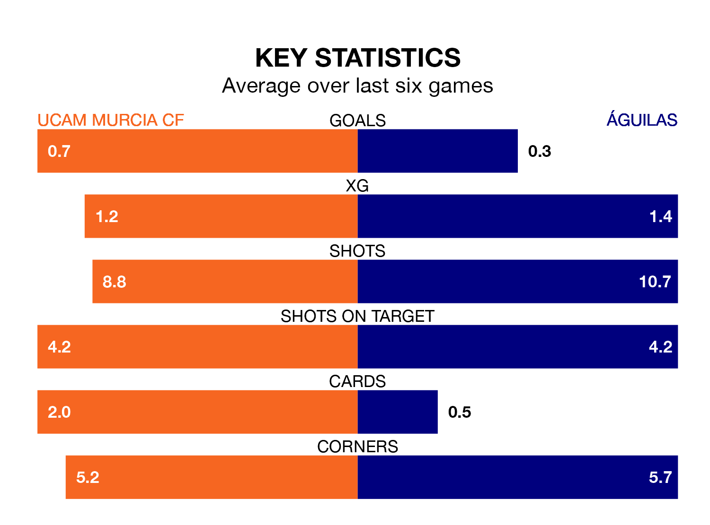

Águilas travel to UCAM Murcia CF on early Sunday in the Segunda División RFEF Group 4.
The visitors come into the game on the back of a win in their last match, having beaten Vélez 1-0 at home, with a goal from Rubén Solano Sánchez.
UCAM Murcia, meanwhile, lost their last match, 4-2 against Yeclano Deportivo, with their goal scored by Francisco Callejón Segura.
With 19 goals in 25 games so far this season, Águilas are scoring at below the league average rate with 0.8 goals per game. But they are conceding fewer than average too, letting in 10 goals at a rate of 0.4 per game.
UCAM Murcia, meanwhile, are average scorers, with 1.0 goal per game. They have conceded 1.1 goals per game.
The visitors are fifth in the table after 25 games, of which they have won 10 and drawn 10, earning 40 points.
The home side are four places behind Águilas in ninth, with nine wins and six draws putting them on 33 points.
UCAM Murcia are in disappointing form in the Segunda División RFEF Group 4, with one win and three draws from their last six games.
And also with a win and three draws over that period, Águilas's form is identical – they have both taken six points from 18.
Updated: 09:34 (UTC), 08/03/24